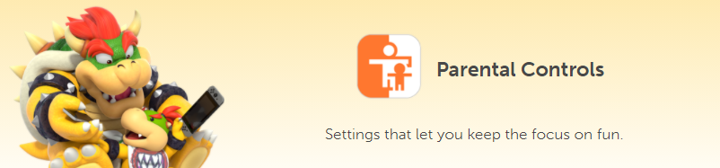
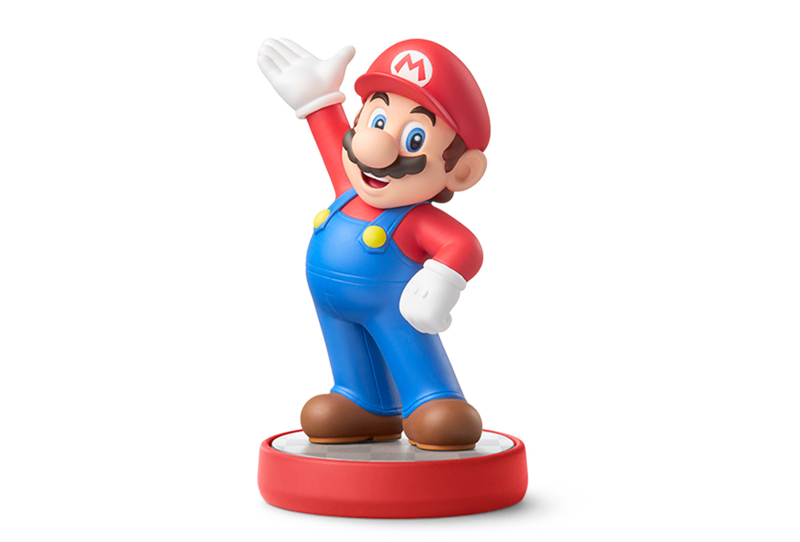

Switch Versus Switch Lite

Nintendo Switch Components
- Nintendo Switch console
- Nintendo Switch dock
- 1 Joy-Con™ (L) controller, 1 Joy-Con™ (R) controller
- 2 Joy-Con™ wrist strap accessories
- Joy-Con grip accessory
- Nintendo Switch AC adapter
- HDMI cable
Nintendo Switch Lite Components
- Nintendo Switch Lite system
- Nintendo Switch AC adapter

Console Versatility
TV Mode
Play with Joy-Cons detached or on Joy-Con grip together or with a Pro Controller for Local or Online Multiplayer.

Tabletop Mode
Pop out the kickstand and play together anywhere locally with Joy-Cons detached or on Joy-Con grip together or with a Pro Controller.

Handheld Mode
Play alone or online (must have internet access) anywhere, anytime with Joy-Cons attached on the side of the console.

Ways To Play
Singleplayer
Play on your own from a variety of singleplayer games with both Joy-Cons attached to the side of the console.

Local Co-Op
Play together on one console with friends on the TV or in tabletop mode with multiple controllers for up to 8 players.

Local Wireless
Link up to eight Nintendo Switch and Nintendo Switch Lite systems together to play multiplayer games anywhere.

Online Play
Team up or face off with others online in compatible games with a Nintendo Switch Online membership.

Further Features
Nintendo Switch Online
The Nintendo Switch Online service that costs $20 a year comes with a retro library of games, full online multiplayer for most games, cloud save data, voice chat capabilities, and special game offers. To learn more information about the service, watch the video below.
Parental Controls
Set gaming restrictions for the family right from your smart device with this free app. To learn more information about the app, watch the video below.
Accessories
Extra Joy-Cons
Pick up an extra set of Joy‑Con, each set coming with two controllers (two people use one controller each or one person uses both) of many color varieties.

Switch Pro Controller
Take your game sessions up a notch with the Pro Controller. This controller is more standard to the other controllers on the market. Includes motion controls, HD rumble, built-in amiibo functionality, and more.

Micro SD Card
The Nintendo Switch comes with 32 GB of storage, but sometimes that is not enough. The officially licensed 128 GB Micro SD Card can help you increase your storage on your system for all of your games!

Amiibo
Amiibo are collectors' figures of popular Nintendo characters! Add them to your collection and get some added benefits in compatible games by scanning the figure on your switch!
Carrying Case and Screen Protector
Since the Nintendo Switch is a portable console, you may want to consider getting an officially licensed case to keep your device safe!